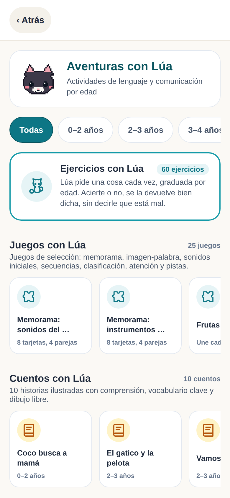
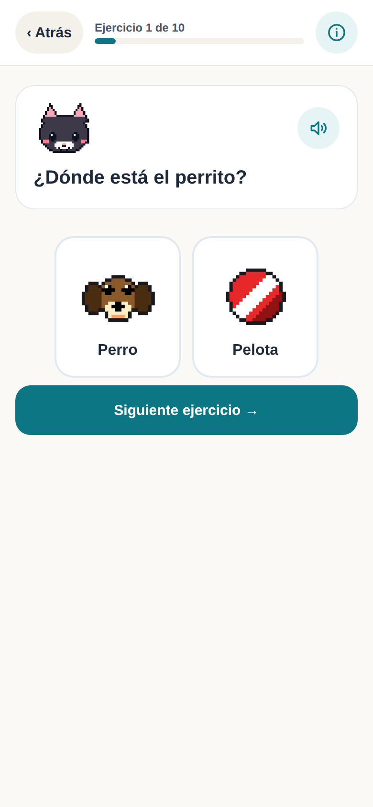
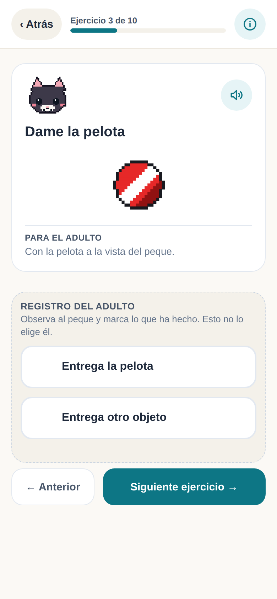
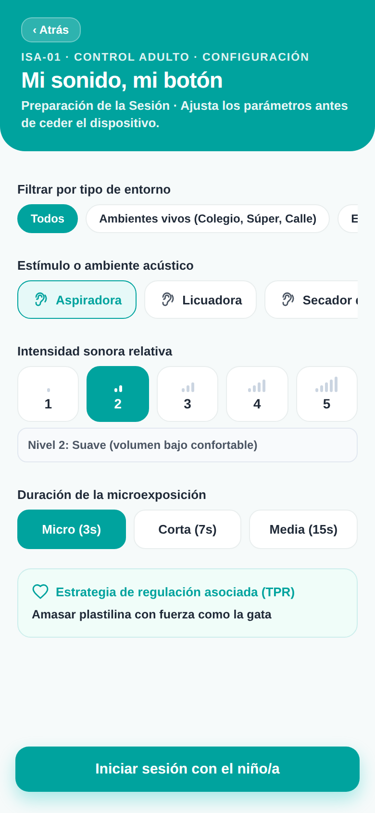
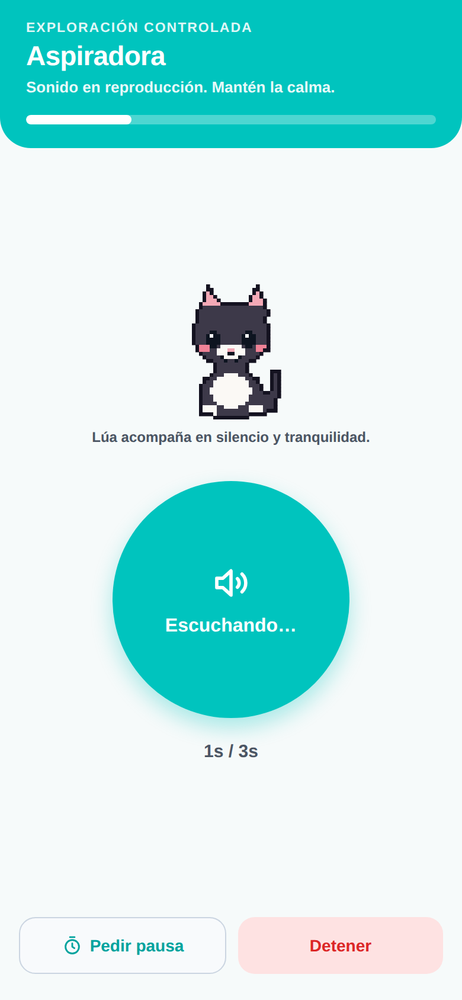
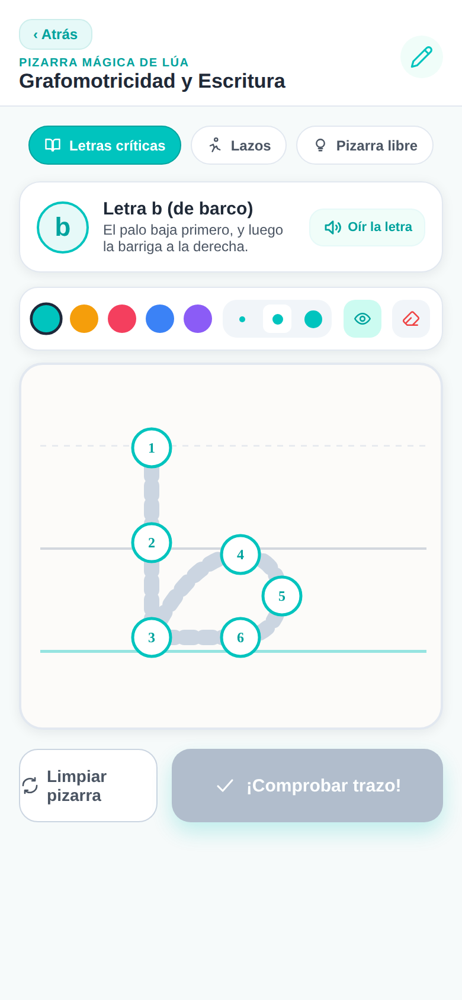
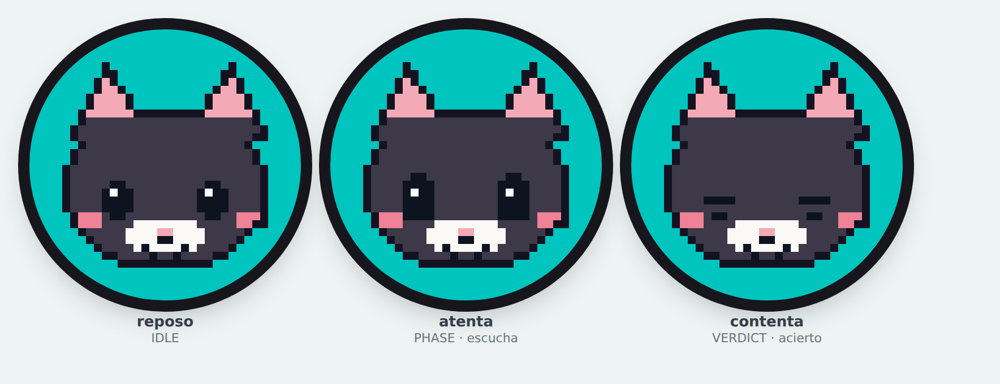

valeria+

Manual de uso
Cómo usar la app, paso a paso. Para la familia que practica en casa y para el logopeda que prescribe.
Versión 15 · Septiembre de 2026
Valeria+ es una app para practicar lenguaje en casa, con el niño y un adulto al lado. Hace dos cosas, y en este orden: primero le explica al adulto qué le pasa a su peque y cómo acompañarle, y después le da ejercicios para hacer juntos. Por eso la app abre en Academy y no en la rejilla de ejercicios.
El adulto dirige la sesión y tiene la última palabra. Donde hay micrófono, este ayuda, pero si la app oye mal, usted corrige el veredicto con un toque. Donde no hay micrófono, usted valora con botones. La app nunca decide sola.
Toda la app cabe en tres pestañas. Si se pierde, vuelva aquí.
| Pestaña | Qué encontrará |
|---|---|
| Academy | Formación para usted, no para el niño. Cápsulas de dos minutos sobre lenguaje, hipoacusia, dislalias, dislexia, TEA, mitos y lengua de signos. |
| Ejercicios | La rejilla de bloques para practicar. Aquí está también la tarjeta de Lúa con el progreso y los premios. |
| Ajustes | Voz e idioma, recordatorios y acceso profesional. |
Las dos conviven en el mismo aparato. No hay que cerrar sesión: se cambia con un PIN de cuatro dígitos que define el logopeda.
| Modo | Quién | Qué puede hacer |
|---|---|---|
| Familia el de siempre |
Madre, padre o cuidador | Practicar lo que hay prescrito, hacer las sesiones, poner recordatorios y ver el progreso. |
| Profesional pide PIN |
Logopeda | Todo lo anterior y además elegir qué se practica. Al guardar, vuelve solo al modo Familia. |
En la demostración es 1985, y es el mismo en todos los bloques. En un uso real, el logopeda lo cambia por uno suyo.
|
|
Lúa es la gata de la app. Está en el icono, en el arranque, en la tarjeta de progreso y al terminar cada sesión, y da nombre a los niveles y a los premios. Para el niño es la cara de la práctica diaria: lo que le hace volver mañana. Se la puede acariciar tocándola en la pestaña Ejercicios. Ronronea y sale un corazón. No suma nada: es afecto, no una mecánica. |
Cuatro cosas, en este orden. Cuando termine, ya habrá hecho una sesión completa.
Se hace una sola vez. Los datos se guardan cifrados en el aparato y no salen de él.


Solo si no va a trabajar en castellano. Si va a trabajar en castellano, sáltelo.
El cambio es inmediato y se guarda. Afecta a lo que el niño oye y a cómo se evalúa, en todos los bloques. El capítulo 6 lo cuenta entero.

Quince minutos aquí valen más que quince de ejercicios a ciegas. En estos ejercicios el motor es usted, así que aprender a acompañar es parte del tratamiento.
Hay siete dominios: Lenguaje, Mitos y verdades, Hipoacusia y sordera, Dislalias, Dislexia, TEA y Lengua de Signos. Academy lleva sus propios puntos e insignias, aparte de los del niño.


Si no sabe por dónde empezar, entre por Aventuras con Lúa: se elige por edad, no por patología, y no hace falta que el niño sepa leer.


Cada apartado es una cosa que va a querer hacer. Busque la que necesite; no hace falta leerlos en orden.
La app carga su prescripción y su progreso —racha y nivel— y abre Academy. Los bloques están en la pestaña Ejercicios.

Vale para Audición, Lenguaje, TEA y Dislexia: los cuatro usan el mismo reproductor.


Es el Test de Ling. Solo aparece en los ejercicios de Audición y solo si la ficha indica audífono o implante coclear.

Al final del panel, separada a propósito, hay una tarjeta que dice cuántas palabras reconoció el micrófono. Es un apoyo del ejercicio, no un resultado: mide lo bien que oye el teléfono, no lo bien que habla el niño. No aparece hasta que se ha practicado alguna frase.


| Franja | Qué llega |
|---|---|
| Mañana · 9:00 | Invitación a la sesión del día. |
| Mediodía · 13:00 | Recordatorio corto. |
| Tarde · 17:00 | Última llamada para no perder la racha. |
| Noche · 20:00 | Un consejo para usted, no un aviso de juego. Rota cada día. |
La colección es del niño, así que no pide PIN.
| Concepto | Cómo funciona |
|---|---|
| XP | Se gana al terminar cualquier sesión. Cuanto mejor y más constante, más. |
| Nivel | Uno cada 100 XP, hasta doce. |
| Racha | Días seguidos con al menos una sesión. Se mantiene si se practicó hoy o ayer. |


Van en el mismo orden que en la pantalla. Cuatro de ellos —Aventuras con Lúa, la Pizarra Mágica, y los premios— no hace falta que los prescriba nadie: están siempre abiertos.
| Bloque | Para quién y para qué |
|---|---|
| Integración Sensorial 6 actividades |
Para el niño que se tapa los oídos con la aspiradora, el secador o el timbre. Se expone al sonido en pequeño y con control. Once sonidos, tres de ellos ambientes completos (aula, centro comercial, calle con obras). |
| Aventuras con Lúa 105 actividades |
La puerta de entrada si no sabe por dónde empezar: se elige por edad (de 0‑2 a 7‑10), no por diagnóstico. Ejercicios, juegos, cuentos y canciones. Nada se responde leyendo. |
| Pares Mínimos 15 pares |
Dislalias. Pares de palabras casi iguales —rana / lana— para trabajar el sonido que se sustituye. |
| Expansión Semántica | Vocabulario en intervención temprana: escenarios del día a día, categorías, progresiones y contrastes, uniendo imagen, voz y movimiento. |
| Audición 18 ejercicios |
Para audífono, implante coclear o hipoacusia. Incluye escucha con ruido de fondo. |
| Lenguaje 7 ejercicios |
Atención conjunta, imitación, comprensión, expresión, comunicación funcional, regulación e interacción. |
| TEA 6 ejercicios |
Espectro autista. Todos los retos los activa el adulto a mano, nunca la app. |
| Dislexia 6 ejercicios |
Conciencia fonológica y acceso a la palabra: intruso, pseudopalabras, rotaciones b/d y p/q, denominación rápida. |
| Pizarra Mágica 6 trazos |
Trazar la b y la d sin invertirlas, con el dedo o lápiz óptico. Es la continuación de Dislexia: allí se distinguen, aquí se escriben. |
| Realidad Aumentada Solo Android, en teléfono |
La cámara frontal como sensor de movimiento: la boca, el giro de la cabeza, la mirada, el gesto. El premio se gana con el cuerpo, no con la voz. |
| Sección | Qué es |
|---|---|
| Ejercicios con Lúa · 60 | Lúa pide una cosa cada vez, graduada por edad: señalar, imitar, nombrar, seguir una instrucción. Diez por franja. |
| Juegos con Lúa · 25 | Memorama, imagen‑palabra, sonidos iniciales, secuencias, clasificar, atención y pistas. |
| Cuentos con Lúa · 10 | Historias ilustradas con preguntas de comprensión, vocabulario y un dibujo libre. |
| Canciones y praxias · 10 | Canciones con pausas activas, ritmo y movimientos de boca y cara. |
«Para el adulto» es la pauta de montaje: qué tiene que preparar o
hacer usted («con la pelota a la vista», «el adulto sopla primero»). El niño no la oye.
«Registro del adulto» son las respuestas que usted marca observando al niño.
No son botones para él.




En Contrastes hay dos vueltas: primero el niño señala la imagen correcta —sin micrófono— y después dice la palabra opuesta.

Aquí no se trata de aguantar. Se trata de que el niño sepa cuándo llega el sonido y pueda cortarlo. Esa es la diferencia entre una exposición y un susto.
La app no mide el sonido que sale del altavoz: eso depende del teléfono, de su altavoz y de dónde esté puesto. Poner una cifra en decibelios sería inventarla. Los cinco niveles son una escala relativa, que ajusta usted con el oído puesto en la sala. La app nunca la sube sola.


No es caligrafía. Trabaja el orden y la dirección del trazo, que es lo que separa la b de la d: son el mismo dibujo girado.

Seis ejercicios que usan la cámara frontal como sensor de movimiento. Solo en teléfono Android con la app instalada: no aparece en tablet, ni en el navegador. No lleva capturas en este manual a propósito: cualquier captura fiel mostraría la cara de un menor.
| Ejercicio | Qué hace el niño |
|---|---|
| AR‑1 · La boquita de beso | Pone boquita de beso y el coche avanza mientras la sostiene. Si una comisura tira mucho más que la otra, no cuenta: esa compensación es justo lo que se intenta deshacer. |
| AR‑2 · ¿De dónde viene? | Suena algo por un lado y él gira la cabeza. Uno de cada cinco intentos no suena: es el control que distingue oír de girarse porque sí. |
| AR‑3 · Elegir mirando | Sostiene la mirada en un dibujo hasta que un anillo se cierra. Necesita una calibración de cinco puntos, obligatoria por niño y por teléfono. |
| AR‑4 · Encontrar a Lúa | Lúa se esconde a un lado y él la busca girando la cabeza, guiado por una retícula. |
| AR‑5 · Lanzarle el pez | Desliza el dedo hacia Lúa. Un toque sin arrastrar no cuenta: sin dirección no hay puntería que medir. |
| AR‑6 · El espejo | Imita la praxia que hace Lúa y la sostiene. Inflar un carrillo más que el otro no se penaliza: es normal. |
Añade un retraso variable de 100 a 300 milisegundos, que es exactamente lo que ese ejercicio quiere medir. La app lo detecta y guarda el intento sin tiempo. El ejercicio sigue funcionando como juego, y el registro dice por qué no lleva tiempo.
Este capítulo es para el logopeda. Todo lo de aquí pide el PIN.
En modo Familia lo retirado sale atenuado, con candado y el rótulo «No prescrita», y no se abre. El mismo PIN vale para los siete bloques.


Es el Panel del Adulto. Tres retos que solo se activan a mano: la app no los enciende ni los ajusta nunca por su cuenta.

Si el niño no lo consigue en varios intentos, el umbral está por encima de lo que hoy puede sostener. Bájelo usted. La app nunca lo ajusta sola: si lo hiciera, el registro dejaría de significar nada.
Hay dos ajustes distintos, y conviene no confundirlos.
| Ajuste | Qué cambia |
|---|---|
| «Voz de la app» Ajustes | Lo que oye el niño y cómo se evalúa: las consignas, las palabras, los bancos de ejercicios. |
| «Idioma de la aplicación» Ajustes | Los menús que lee usted. Existen en castellano, inglés y catalán. |
Por defecto van juntos: cambiar uno arrastra el otro. Si quiere los menús en un idioma y los ejercicios en otro —el caso del logopeda con pacientes de varias lenguas—, elija primero el idioma de la aplicación y después la variedad en «Voz de la app». Esa segunda elección manda y se conserva. Al revés no funciona: el idioma arrastra la variedad y deshace lo elegido.
| Variedad | Cómo suena y qué tiene de particular |
|---|---|
| Castellano | Voz neuronal empaquetada en la app: suena natural y funciona sin conexión. |
| Galego | Voz neuronal propia. Lo que aún no cubre suena con la voz neuronal castellana, en vez de quedarse mudo. |
| Dominicano | Voz latina del teléfono. Respeta el habla caribeña: no marca como error el seseo, la «s» aspirada ni el cambio de «r» por «l» al final de sílaba. |
| Euskara | Voz neuronal propia, en batua. |
| Català | Voz neuronal propia y banco de pares propio, con contrastes que en castellano no existen: caça/casa, peix/pes, os/ós, palla/pala. |
| English (US) beta | Voz neuronal propia y banco clínico completo. No marca como error los rasgos del inglés afroamericano ni los del hablante bilingüe. |
La app funciona entera sin conexión. La ficha, el historial, la evolución por fonema y el progreso se guardan cifrados en el propio aparato. No hace falta cuenta ni internet para usarla.
La app no guarda, no reproduce y no envía a ningún servidor propio ningún audio del niño. El sonido se procesa durante el turno de habla y se descarta. Lo único que queda es si acertó o no.
Quien reconoce las palabras es el servicio del propio teléfono, y la app le pide siempre que trabaje sin conexión, dentro del aparato. Que lo consiga depende del teléfono y del idioma: hace falta que el paquete de ese idioma esté descargado. En castellano es lo normal; en galego y euskera es raro, y ahí el reconocimiento puede pasar por el servicio en línea del sistema, con la política de privacidad de ese servicio, ajena a Valeria+.
La tarjeta «Voz de la app» se lo dice para el idioma que tenga puesto: si se está escuchando dentro del teléfono o a través del servicio del sistema, y por qué. Si lo único que falta es el paquete de idioma, se lo ofrece descargar; si prefiere no hacerlo, los ejercicios funcionan igual.
No se graba ni se guarda ninguna imagen —cada fotograma se analiza y se descarta al instante—, ningún vídeo sale del teléfono y no se reconoce la cara de nadie. Lo único que se conserva son números: grados de giro, milisegundos, proporciones y qué dibujo se miró. Mide conducta motora, no identidades. El permiso se pide una vez por paciente y puede retirarse cuando quiera desde los ajustes de Android.
Métricas anónimas de uso: cuánto se tarda en cada pantalla, los toques fuera de sitio, cuántas pausas de movimiento se saltan y cuánto se usan las ayudas de pantalla. No hay nombres, ni audio, ni el contenido de las respuestas. Se guardan cifradas y se borran al exportarlas. El consentimiento de las familias se gestiona en el protocolo del piloto, fuera de la app.
Sincronización en la nube: existe un acceso profesional con correo y contraseña para guardar una copia de pacientes y sesiones. Es opcional. Si no se activa, todo se queda en el aparato.
| Le pasa esto | Haga esto |
|---|---|
| El micrófono no reconoce la voz | En el navegador no hay reconocimiento: valore usted con los botones. En la app instalada, revise el permiso de micrófono. |
| La app oyó mal en Pares Mínimos | Corríjala con «dijo rana / dijo lana». Usted es el juez final y un falso positivo no penaliza al niño. |
| El micrófono falla más en galego o euskera | Es esperable: hace falta el paquete de idioma instalado en el teléfono, y en esas lenguas es poco frecuente. La tarjeta «Voz de la app» le ofrece descargarlo cuando el aparato lo permite. |
| No avanza tras la misión física | Es el sello doble: adulto y niño pulsan las dos huellas a la vez. Con una sola mano, mantenga pulsada una huella dos segundos. |
| No aparece el Test de Ling | Solo sale en Audición, y solo si la ficha indica audífono o implante coclear. |
| El mismo ejercicio se repetía igual | Use «Otra ronda». Para practicar de una vez todo lo prescrito, «Sesión completa». |
| Salió ruido de fondo o una gata moviéndose por el borde | Son módulos del Panel del Adulto y solo se activan a mano. Apáguelos desde ese mismo panel. |
| Apareció una encuesta con caritas | Es la encuesta de satisfacción del piloto. Sale al completar cuatro bloques distintos, como mucho una vez por semana. Puede cerrarla sin responder. |
| Le pasa esto | Haga esto |
|---|---|
| La racha volvió a cero | Pasó más de un día sin practicar. Active los recordatorios. La mejor racha no se borra y las insignias ganadas se conservan. |
| No encuentra las insignias | En «Premios ›», en la tarjeta de Lúa. No hace falta PIN. |
| Las sesiones de la Pizarra Mágica no salen en los resultados | Es correcto: la pizarra no puntúa. Es práctica libre, no una medida. |
| ¿Se pierden los datos al cerrar la app? | No. Todo se guarda cifrado en el aparato. |
| Le pasa esto | Haga esto |
|---|---|
| No puede cambiar qué se practica | Está en modo Familia, que es de solo lectura. Desbloquee el modo Profesional con el PIN. |
| No recuerda el PIN | Lo define el logopeda. En la demostración es 1985 y es el mismo en todos los bloques. |
| Le pasa esto | Haga esto |
|---|---|
| En dominicano la voz suena de España o robótica | Instale una voz de «Español (Latinoamérica)» en los ajustes del teléfono. La app la detecta sola. |
| Marca como error algo que en su país se dice así | En dominicano la app respeta el seseo, la «s» aspirada y la «r/l» final. Y usted siempre puede corregir el veredicto. |
| En galego algunos ejercicios no hablan | Lo que aún no cubre la voz gallega suena con la castellana, en vez de quedarse mudo. |
| La Pizarra Mágica está en castellano con otra variedad puesta | Es así hoy: los textos escritos de esa pantalla solo están en castellano. Lo que Lúa dice sí suena en la variedad puesta. |
| Le pasa esto | Haga esto |
|---|---|
| No ve el bloque | Solo aparece en teléfono Android con la app instalada, y solo si la prueba de aptitud lo permite. Los demás bloques funcionan igual. |
| El ejercicio se cierra solo | La cámara dejó de ver la cara. Apoye el teléfono en un libro o una caja, horizontal y a 30‑35 cm. Nunca en la mano. |
| El coche de AR‑1 no arranca | La mueca puede estar saliendo asimétrica, que no cuenta a propósito, o el tiempo de sostén está por encima de lo que hoy aguanta. Bájelo usted en el Panel. |
| En AR‑2 no salen los tiempos | Hacen falta altavoces con cable. Con Bluetooth se vetan a propósito. El ejercicio sigue como juego y el registro dice por qué. |
| En AR‑3 la mirada no selecciona | Falta la calibración de cinco puntos, obligatoria por niño y por teléfono. Si el puntero tiembla, cambie a «rayo desde la nariz» en el Panel. |
| ¿Se graba a su hijo? | No. Cada fotograma se analiza dentro del teléfono y se descarta. No hay grabación, no sale ninguna imagen y no se reconoce ninguna cara. |
No hay nada que buscar en los menús, nada que emparejar y nada que comprar. Es un prototipo en desarrollo. Está aquí porque la gata de la app y ese aparato se llaman igual, y conviene saber qué va a hacer y, sobre todo, qué no.
Lúa es también un peluche con una pantalla por cara, conectado por Bluetooth a la app. La idea es pequeña a propósito: la app decide, Lúa reacciona. Cuando el adulto da una respuesta por buena, la cara de Lúa lo celebra en la mesa, fuera de la tableta, que es donde el niño está mirando.
| No hace | Por qué |
|---|---|
| No escucha | No lleva micrófono, y el firmware no compila si alguien intenta añadir entrada de audio. Un juguete que escucha junto a un menor no entra en una consulta pediátrica. |
| No habla | Las consignas salen siempre por el altavoz de la tableta, y eso no va a cambiar. Hoy el aparato no suena nada. |
| No se mueve | Sin motores: nada que pellizque o se rompa en manos de un niño pequeño. |
| No sabe quién es el niño | El protocolo no tiene ningún campo de texto. No es que la app evite mandar el nombre: es que no existe el sitio donde meterlo. |
| No decide nada | No mide, no puntúa y no lleva la sesión. Todo lo decide el adulto en la app. |
No se parecen: son la misma. La cara, los dibujos de las fichas y las insignias se dibujan una sola vez en la app y el aparato los copia. Si el niño le pone la flor y la pajarita en el armario, la gata del aparato aparece con la flor y la pajarita. Si la acaricia, ronronea en los dos sitios. Una comprobación automática impide compilar si los dos lados se desvían.

La placa redonda existe y la cara de Lúa se ha visto moverse en su pantalla de 32 mm. Sigue siendo un prototipo sobre una mesa: no hay peluche, no hay carcasa y no hay unidades. Queda por comprobar que la cara reaccione en menos de tres décimas de segundo desde que el adulto pulsa, que dos dibujos parecidos se distingan en una pantalla tan pequeña y que la vuelta a reposo funcione cien veces de cien cuando se pierde la conexión.
En una valoración auditiva (VIA+) el aparato no está en la sala. La protección no es mandarle callar: es que no esté.